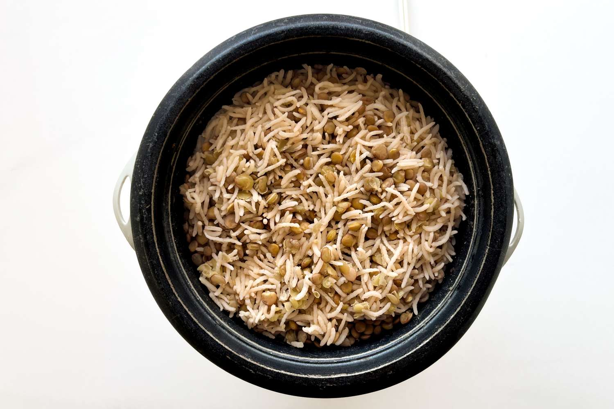

Credit: Simply Recipes / Kris Osborne
It's a great option “for people who want to boost nutrition at their meals without a lot of extra effort or changing the flavour too much.” The rice and lentil mix is satisfying, like white rice, but it packs significantly more fiber and protein, keeps me fuller longer, and takes no extra time to make. The small swap that makes a big difference.